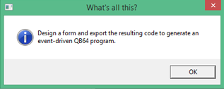
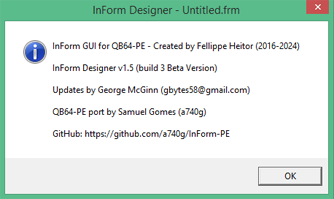

InForm-PE IDE tour
The InForm-PE IDE includes an integrated designer and a real-time component layout application. To start the IDE tools, navigate into your QB64-PE folder (qb64pe) and double-click the application file UiEditor.exe
.InForm Designer overview
Current Project: When you load a project or save a newly created form for the first time, the name you give the project is displayed here.
Menu: The menu functions like any other Windows program menu. It can be activated through the use of a mouse or by pressing the ALT key and then using the keyboard arrow keys to navigate the menu options.
Help: Selecting "Help" brings up a basic help menu that includes the About box displaying the version number.
Toolbox: The Toolbox allows you to easily add controls. Left-mouse-click on the required control. A selected control is inserted and displayed in the component-preview window. For details, checkout Toolbox controls.
Control Properties: A list of properties that are dynamically updated according to the currently selected control. Edit these properties as required.
Control toggles: The three options allow the application to start up centered, resize, and include a gif extension.
Color select-mixer: The color select and mixer, which you use to send color data to the preview application.
Note: The preview application is loaded side-by-side with the editor and allows you to see in real-time how your form will look after being compiled.
File Menu
New: This action will erase the current InForm project and begin a new one. If the current project has not been saved, you will be prompted to save it.
Open: This option opens the folder/file navigation and displays a list of previously saved projects. Select a project file. (Projects are saved with the file extension .frm.) If the current project has not been saved, you will be prompted to save it.
Open recent project: This option opens a list allowing you to select a previously saved project (projects are saved with the file extension .frm). If the current project has not been saved, you will be prompted to save it.
Save project: This menu option saves your project.
Two files are output: *.frm and *.bas. The .frm file contains your form layout information in QB64 code. The .bas file is the actual program to which you will add your code. You only need to enter the project name you want to save, and the file extension is automatically added.
Save project as: This allows you to save the current project with a different name; both *.frm and *.bas files are created.
- Note: To ensure that only the form with the file extension *.frm is saved, please make sure you have enabled the Save form only option in the Options menu .
Exit: This will close the InForm IDE. If the current project has not been saved, you will be prompted to save it before the InForm IDE closes.
Edit Menu
Note: The Edit menu operates on a selected component or components in the Component Preview Form Window. Additionally, it operates on changes made to the InForm designer window.
Undo/Redo: This feature allows you to undo or redo changes you made using the InForm Designer. The InForm Designer IDE remembers all changes made, so repeatedly pressing CTRL-Z will continue to undo changes all the way back to the beginning, if desired.
Cut/Copy/Paste: These functions work exactly like those in any other Windows program you are familiar with. They operate on a selected component or components in the Component Preview Form Window.
Delete: This option deletes a selected component or components in the Component Preview Form Window.
Select All: This command selects all components in the Component Preview Form Window.
Convert to **: Allows a selected component to be toggled between similar functionalities. For example, between the ListBox and the Dropdown list or between the Textbox and the Numeric Textbox.
Z-ordering Opens a window allowing you to set the component selection order when the tab key is pressed.
View Menu
Keep preview window attached: When checked, the preview window moves with the InForm Designer window. Uncheck this option for independent windows.
Show position and size on the preview: When checked, selecting a component in the preview window displays its position and size. Uncheck this option to hide this information.
Show invisible controls on the preview: Checking this menu option displays components with their hidden attribute set to hide. Uncheck it to hide these components in the preview window.
Reload preview window: This option refreshes the preview window.
Loaded fonts: Displays a pop-up list of all fonts used in the current project.
Insert Menu
Menu Bar: Inserts a menu bar into the preview window. You can add items to the bar and include drop-down items.
Context menu: This menu item inserts a context menu located at the bottom-left of the preview window. You can add drop-down items and additional items to these drop-downs.
Note1: To assign a context menu to your application, navigate to "Control Properties." From the "Context menu" dropdown list, select your context menu name.
Note2: To display a context menu, run your application, right-click anywhere in the application.
Menu item: To display a context menu, run your application, and right-click anywhere in the application.
For detailed menu information, refer to the following page MenuBar and ContextMenu.
.Align Menu
Snap to edges: When moving a single component, you will notice a reference line, enabling easy positioning of the component to snap to another component's edge. As you move toward another component, the minimum snapping distance will be 5 pixels.
The operation of other menu items is self-explanatory, except for the last two items, which become highlighted when two or more components are selected. The last two items are highlighted when three or more components are selected.
Note: Some alignment methods are available using the preview window's context menu.
Options Menu
Auto-name controls:
When checked, the default setting allows InForm Designer to automatically name controls. When unchecked, you need to supply unique names for the controls.
Save form only:
When the checkbox is unchecked, the default setting forces both file optionsSave project and Save project as to save project files with extensions.bas and .frm
When the checkbox is checked, it forces both file options Save project and Save project as to save only project file with extension .frm This is convenient when you want to make minor changes to only the form.
Help Menu
The "Help" menu displays general information as follows:
What's all this: Opens a pop-up displaying a general description of the InForm Designer's functions.
About: The "About" option opens a pop-up displaying general information, such as the designer's name, development version number, and contact details.
